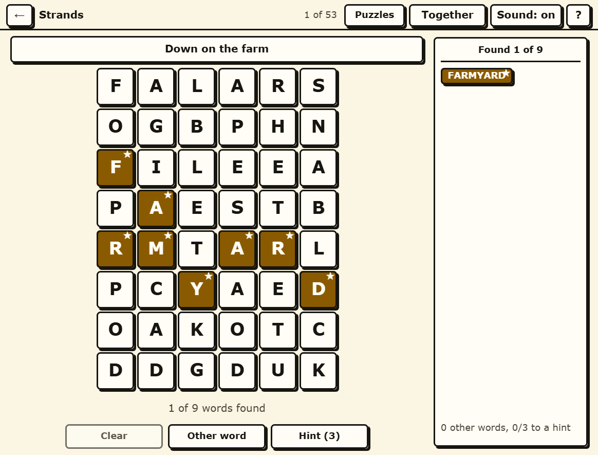

Farmy Strands
A grid with a theme, where every letter belongs to a word - and you draw the words with your hand.
Play Farmy Strands in your browser →

How it plays
The board is six letters across and eight down - forty-eight in all - and every single one of them belongs to a word about the theme at the top. There is no list of words to find and there is no filler: a letter you have not used yet is a word you have not found yet, which is what makes the last two or three findable rather than a hunt.
One word in each grid is the spangram. It names the theme instead of being an example of it, and it stretches from one edge of the board to the opposite one. When you find it, it is marked in gold with a star.
A word is a path across letters that touch, including diagonally, and no letter can be used twice in the same word.
You draw the words
Press and drag across the letters and a ribbon follows your hand. Drag back over the last letter to rub it out; let go to submit. It is the gesture the puzzle actually wants, and it works the same with a mouse, a finger or a stylus. Nothing here is only draggable, though: every word can be typed instead, and the whole board can be worked with the arrow keys.
Hints you earn by playing
Words that are not part of the theme are not wasted. Find three valid ones of four letters or more and the game gives you a hint: it lights up the letters of a word you have not found and says nothing about the order they go in. Three are available in each grid, and the counter shows how close the next one is.
Fifty-three grids, 446 words
The themes are farm days rather than farm trivia - "Milking time", "Bringing in the crop", "In the vegetable patch", "Orchard day", "Keeping bees". There is a grid of the day and it rotates through the whole set, but nothing is locked and nothing expires; all fifty-three are in a dropdown on the same screen, and a grid you left half done is still half done when you come back to it.
The grids are not drawn by hand and not padded. Each one is packed so that the theme words tile the board exactly - forty-eight letters, no gaps and no overlaps - and every one of the fifty-three is checked for that before it ships.
Built for eyes that are not twenty any more
- Nothing is said with colour alone. A found theme word is gold and carries a mark; the spangram carries a star. The found list keeps each word's colour and mark, so the list and the board say the same thing about it.
- Text clears AAA contrast, not AA. 7:1 rather than 4.5:1, dark ink on warm cream rather than black on white.
- Nothing is smaller than 18 pixels and nothing you can press is smaller than 48 by 48 - which for a forty-eight cell grid is the constraint the whole layout is built around.
- There is no timer and no streak that a slow week can break.
- Nothing moves unless you ask it to. Transitions last 120 milliseconds and switch off if your browser says you prefer reduced motion.
Play it with somebody
Press Play together and you get a room: the same grid, one shared board, and every word either of you traces appears on both screens. A grandparent and a grandchild on two sofas doing one grid between them is the case this was built for. Send the link, or read out the six-character code - it has no O, I, L, S, Z, B, 0, 1 or 5 in it, precisely so it survives being said down a telephone.
No account, no sign-in, nothing kept
Your progress lives in your own browser and goes nowhere else. There is no sign-in and no download, and playing on your own makes no network call at all once the page has loaded. Playing together connects the two browsers directly to each other: the words go peer to peer, there is no game server, and the room stops existing the moment you close the tab.
The other three games
Farmy Strands is one of four word games in Farmy Crosswords, and they share the one page, the one style and the one Play together room.
- Farmy Wordle - six guesses at a five-letter word, 65 of them.
- Farmy Spelling Bee - seven letters, the middle one compulsory, 53 hives.
- Farmy Connections - sixteen words, four secret groups, 52 sets.